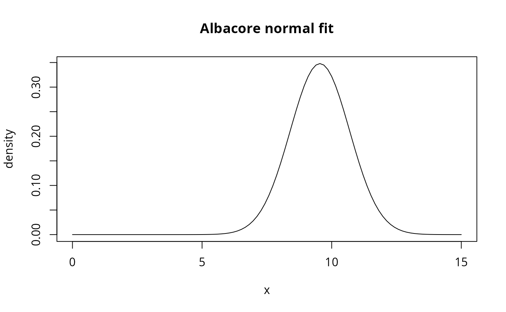

Evaluates one or more fitted probability densities on the log predator/prey mass-ratio scale.
Arguments
- x
Numeric vector of log-PPMR values at which to evaluate the density.
- fit
A one- or multi-row fit data frame accepted by
validate_fit().
Value
If fit has one row, a numeric vector with the same length as x.
If it has multiple rows, a numeric matrix with length(x) rows and one
column per fit row, named with fit$species.
Details
A "normal" row is evaluated with stats::dnorm(), a "trunc_exp" row
with dtexp(), and a "gauss_mix" row as the weighted sum
\(\sum_j p_j\,\mathrm{dnorm}(x;\mu_j,\sigma_j)\). The power column is
metadata describing the weighting represented by the fit; this function
does not transform it. Call transform_fit() first when a density at
another prey-mass weighting is required.
See also
fit_log_ppmr() to create fits and plot_log_ppmr_fit() to compare
fitted and empirical densities. See
vignette("density_functions", package = "mizerStomach") for the
interpretation of densities at different weightings.
Examples
# Fit a normal distribution and evaluate its density
fit <- fit_log_ppmr(barnes_data, "Albacore", distribution = "normal")
x <- seq(0, 15, length.out = 100)
density <- get_density(x, fit)
plot(x, density, type = "l", main = "Albacore normal fit")

# Density for multiple species returns a matrix
fit2 <- fit_log_ppmr(barnes_data,
c("Albacore", "Atlantic cod"),
distribution = "normal")
densities <- get_density(x, fit2)
head(densities)
#> Albacore Atlantic cod
#> [1,] 3.117323e-16 0.01358941
#> [2,] 9.282546e-16 0.01542328
#> [3,] 2.716256e-15 0.01744532
#> [4,] 7.810747e-15 0.01966557
#> [5,] 2.207154e-14 0.02209326
#> [6,] 6.129021e-14 0.02473653